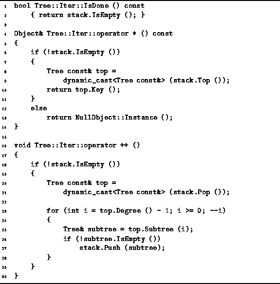

Data Structures and Algorithms
with Object-Oriented Design Patterns in C++
Data Structures and Algorithms
with Object-Oriented Design Patterns in C++
Program  defines the three standard member functions
for manipulating iterators,
IsDone, operator*, and operator++.
The purpose of IsDone is to return false
as long as there are still more objects in the container
which have not yet been visited.
This is the case as long as there is something in the stack.
Therefore, the implementation simply calls IsEmpty to test
whether the stack is empty.
Clearly, the running time for IsDone is O(1).
defines the three standard member functions
for manipulating iterators,
IsDone, operator*, and operator++.
The purpose of IsDone is to return false
as long as there are still more objects in the container
which have not yet been visited.
This is the case as long as there is something in the stack.
Therefore, the implementation simply calls IsEmpty to test
whether the stack is empty.
Clearly, the running time for IsDone is O(1).

Program: Tree::Iter Class Constructor Operator Member Function Definitions
The dereferencing operator, operator*, is used to access the object which to which the iterator currently refers. In this case, the iterator refers to the object at the root of the tree which is at the top of the stack. Note, the stack will never contain an empty tree. Therefore, if the stack is not empty, then there is a referent. The dereferencing operator obtains a reference to the tree at the top of the stack by calling Top, and then calls the Key member function to access the root of the tree. The running time for operator* is O(1). When the stack is empty, this function returns a reference to the NullObject instance.
Finally, the pre-increment operator, operator++, is used to advance the iterator to the next node in a preorder traversal. It does so by popping the top tree from the stack and then pushing its subtrees onto the stack provided that they are not empty. Notice the order is important here. In a preorder traversal, the first subtree of a node is traversed before the second subtree. Therefore, the second subtree should appear in the stack below the first subtree. That is why subtrees are pushed in reverse order. The running time for operator++ is O(1).
 Copyright © 1997 by Bruno R. Preiss, P.Eng. All rights reserved.
Copyright © 1997 by Bruno R. Preiss, P.Eng. All rights reserved.